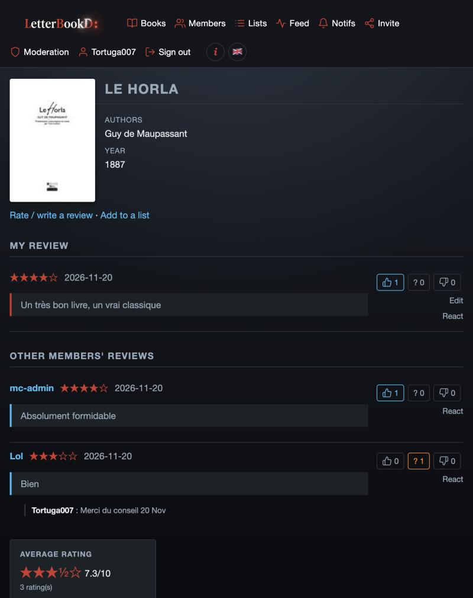

← Back to Documentation Index
Book page (example: Le Horla)
A book's main page: metadata, your review, other members' reviews, reactions and collective stats.
Interface overview

Header
- Large cover
- Open Library cover or default cover.
- Title, Authors, Year, Pages, ISBN
- book metadata.
- Summary
- Open Library description (when available).
- Rate / write a review
- link — opens the rating page (status, rating, dates, text, spoiler).
- Add to a list
- link — opens the list picker.
My review
- If you haven't written one
- inline textarea + Publish button for a quick review, or “Full review” link for the detailed page.
- If you already have one
- your star rating, the date and your text as a quote, followed by any comments others left.
- Blue thumb / ? / red thumb
- reaction buttons on your own review — reflect what others think.
- Edit
- opens the review edit page.
- React
- opens the dedicated review page to add a comment.
Other members' reviews
- Reverse-chronological order
- newest first, up to all existing entries.
- Each review
- username + rating + date, then the text, then nested comments.
- Reaction buttons
- blue thumb (approve), ? (question), red thumb (disapprove). One vote per review, editable.
- React
- opens the review in its dedicated page to comment.
Right sidebar
- Average rating
- numeric average out of 10 + stars.
- Rating count
- how many members rated.
- Distribution chart
- 10 vertical bars (ratings 1 to 10) — hover a bar to see the rating and vote count.